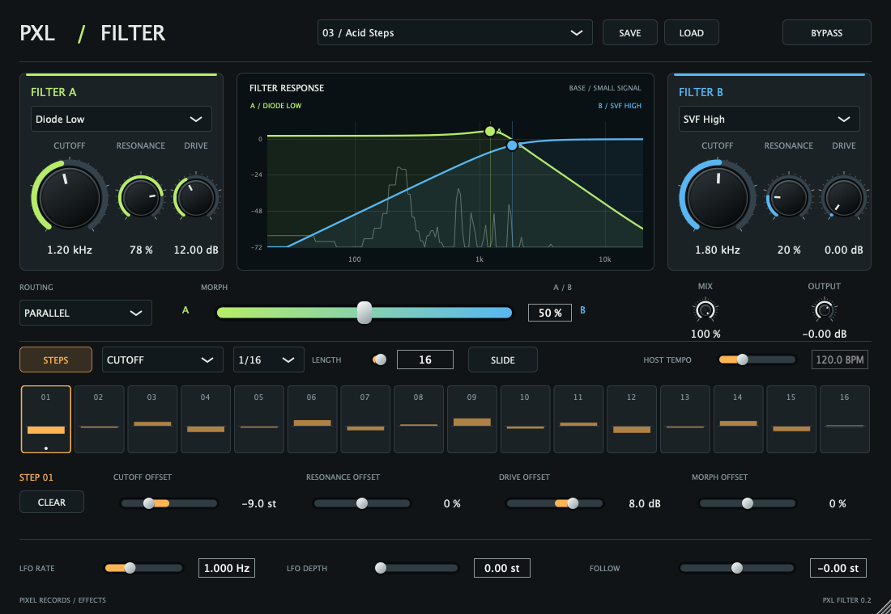
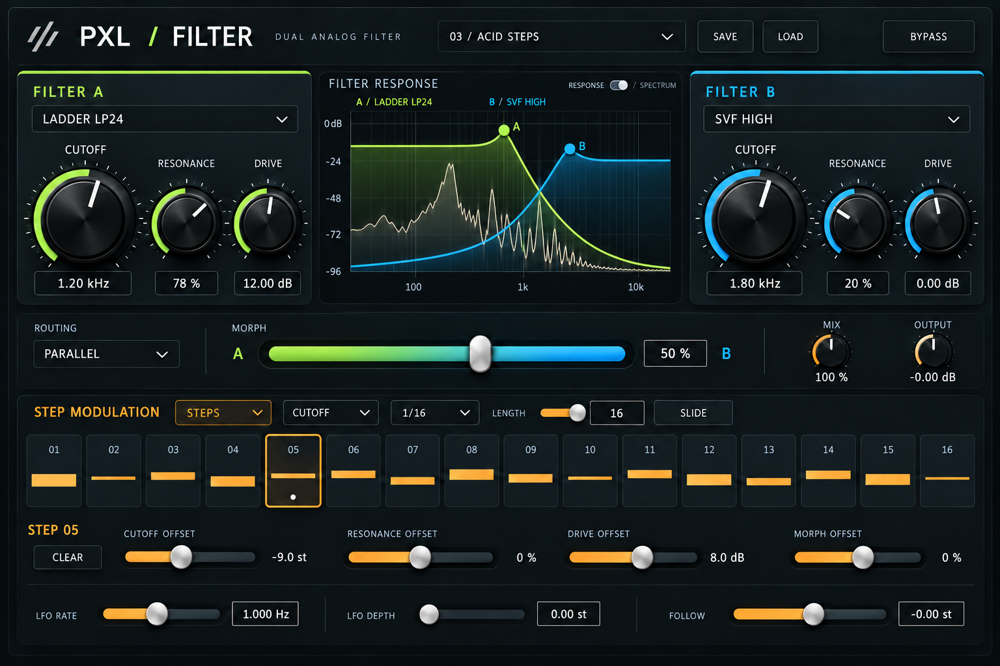

Round it out.
Ladder and diode low-pass filters for soft sweeps, weight and bite.
PXL AUDIO / EFFECT 01
DUAL FILTER / 0.2.0Two filters. Eleven characters. A little movement goes a long way.
AUDIO EFFECT / AU + VST3 + STANDALONE / MACOS
01 / THE INSTRUMENT
Warm and rounded. Sharp and strange. PXL Filter puts two distinct filter voices at your fingertips, then lets you move between them.

Put it on a sound.
Make it your own.
02 / FIND YOUR CHARACTER
Find the shape that fits the sound, then push it. Filter models bring their own response, resonance and drive.
Ladder and diode low-pass filters for soft sweeps, weight and bite.
Low, band, high and notch shapes for precise movement and animated tones.
Formant, comb and phaser modes bring vowels, tuned colour and movement.
03 / GIVE IT MOVEMENT
Draw a pattern. Change a single step. Let the sound follow your playing or move on its own.
Set cutoff, resonance, drive and morph offsets for each of 16 steps. Slide between steps or let them jump.
An LFO brings continuous movement. The envelope follower reacts to the level of your input.
Blend in parallel, run A into B in series, or explore opposing stereo blends. One slider brings them together.
04 / THE DESIGN
A tactile PXL instrument, built for getting your hands on a sound. This design study shows the visual direction behind the filter.
DESIGN STUDY / ILLUSTRATIVE

05 / BRING IT INTO YOUR STUDIO
Put PXL Filter on a track and start moving.
AU, VST3 and standalone in one download.
Download PXL FilterDevelopment build · Developer ID signed · Apple notarized
macOS 12 or later · Apple Silicon
Unzip the download. Copy the AU to ~/Library/Audio/Plug-Ins/Components and the VST3 to ~/Library/Audio/Plug-Ins/VST3. Restart or rescan your DAW. The standalone app is included too.